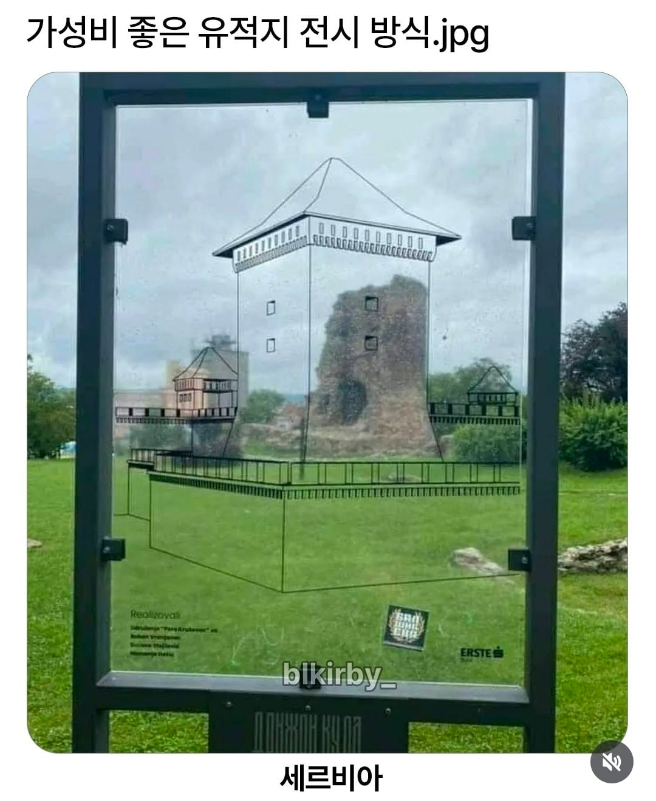
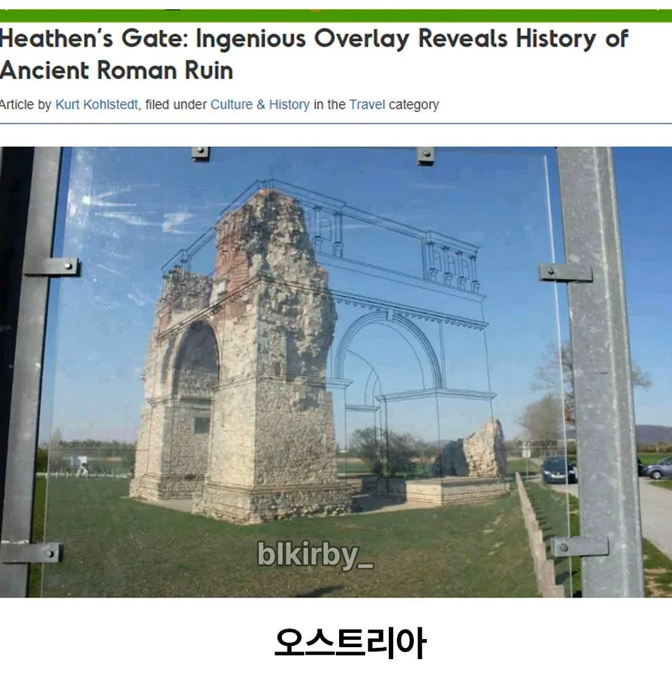
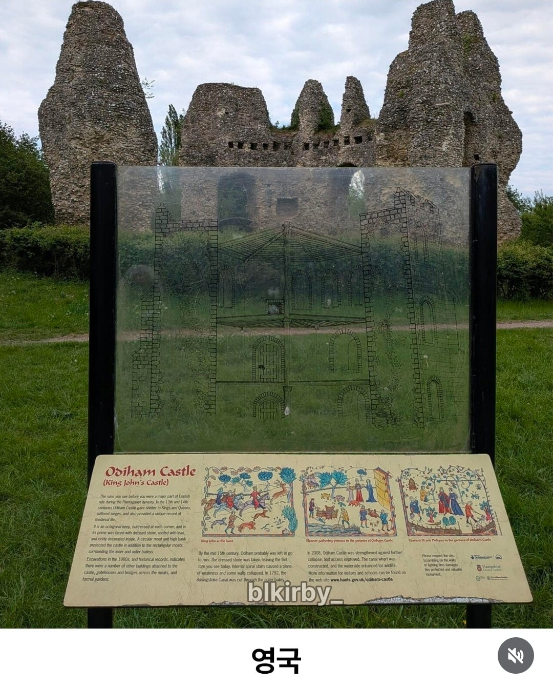
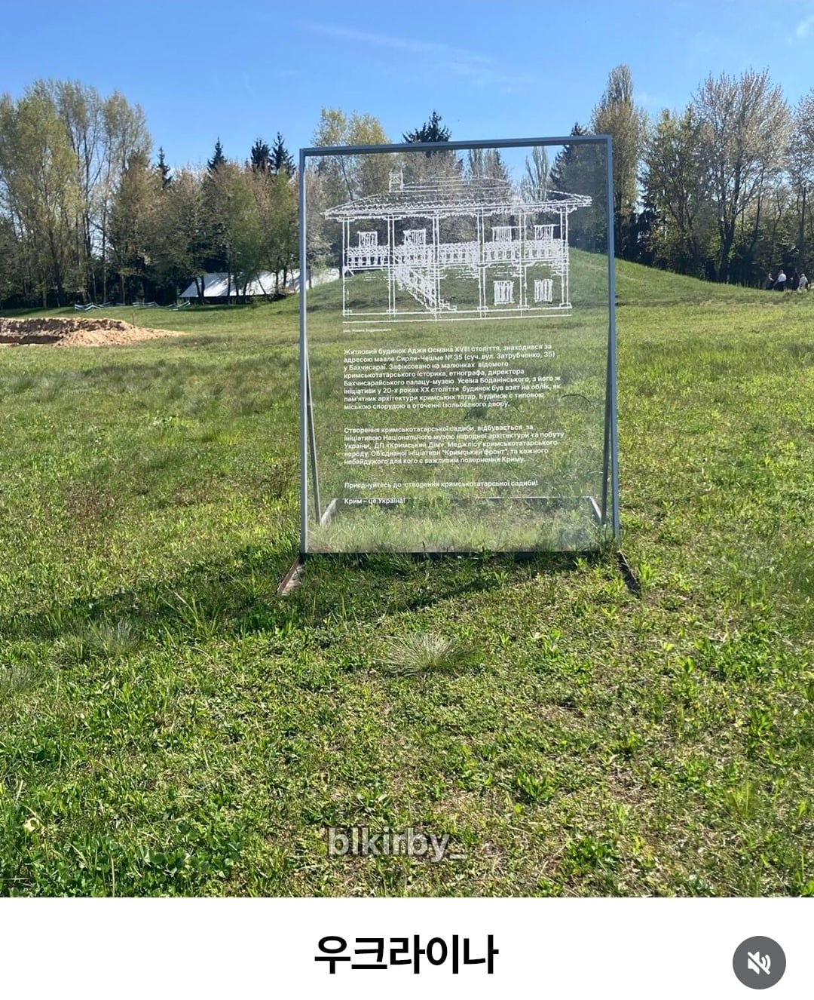
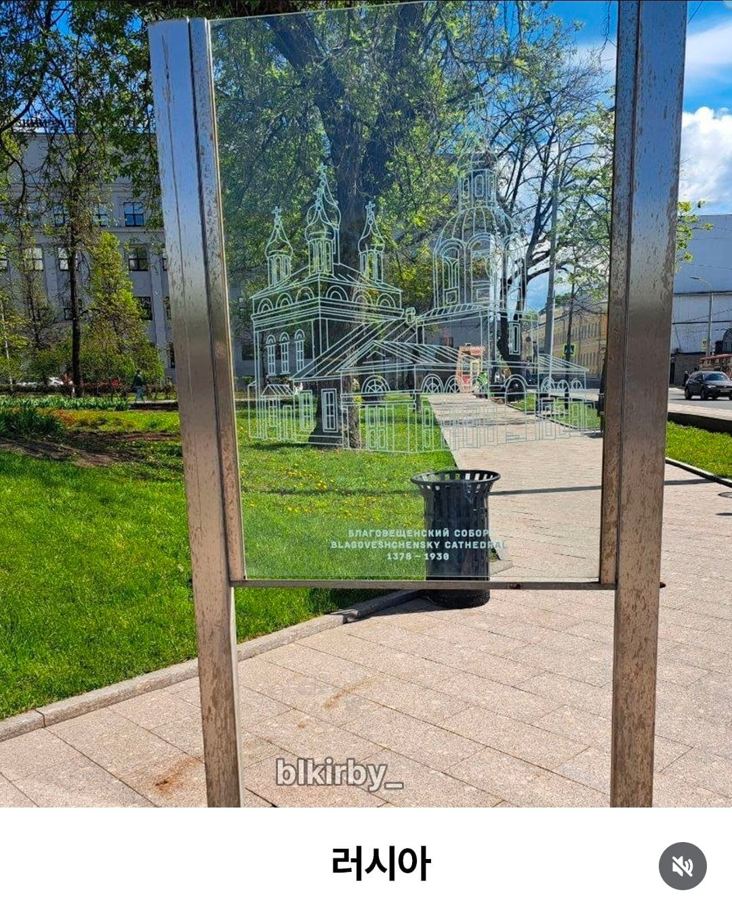
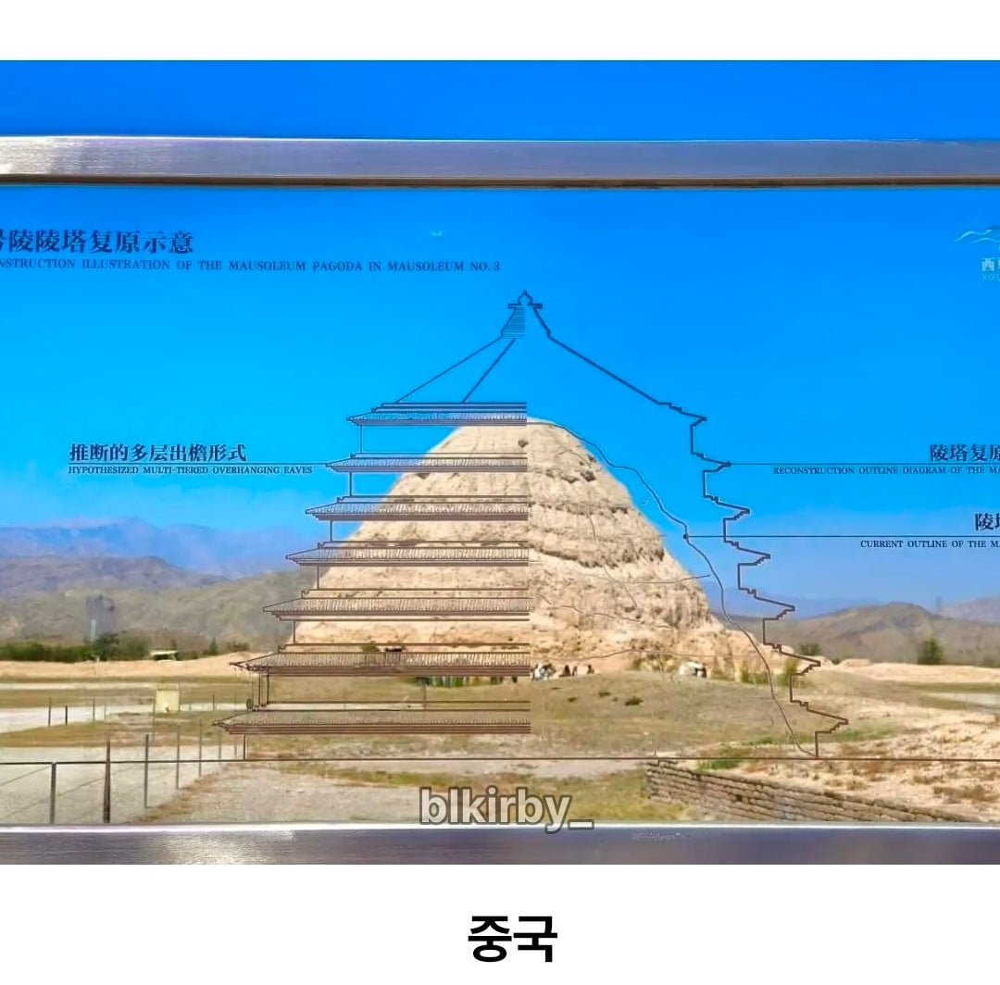
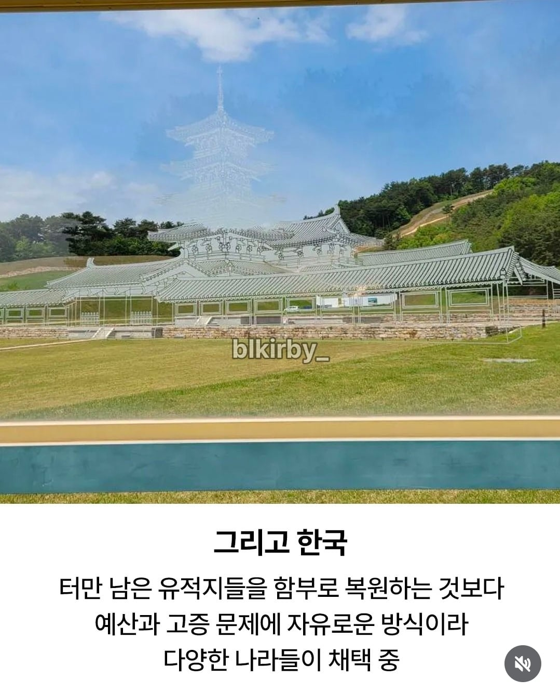

경주 디자인 표절 사건을 찾아 마지막에 넣어야 개드립 갈듯


아하 사진봤으니 안갈게요
ㅋㅋㅋㅋㅋㅋ 가면 걍 공터잖아
우리나라도 저거 하고 아래에 [ 일본이 부숨 ] [ 일본이 태움 ] 써놓으면 좋겠다
흠.....몽골이 부숨, 몽골이 태움, 일제가 복원(공구리 침)이 제일 많을걸
공구리(당시최신기술)
당시 최첨단건축강화소재 시멘트사용
진짜 악의없이 나름 일본 채-신기술로 열심히 복원한 결과물이라더라 ㅋㅋㅋㅋㅋ
일본이 긴빠이는 존나 쳐가도 뭔 음습한 의도가 있는거 아니면 그냥 부셔놓진 않음 음습한 의도로 조져놓은건 있음
오히려 식민지 문화재도 일본 문화재니까 복원을 해놓자 같은 발상일려나
복원하다 조져놓은건 좀 있음
긴빠이 친것도 존나 많고 적고 보니 개새끼들이긴함
둘 다 한게 미륵사지 석탑... 그거 보니까 공구리칠만 한게 아니라 심주석 아래 판 흔적도 있더라고
사리합을 비롯한 유물들이 심주석 아래가 아니라 속에 있어서 도굴 면한거였음
좋은의도로 복원하려한거o
조진거o
지들것도 공구리 다쳐놓음 ㅅㅂㅋㅋ
일본이 뭔아 이왕할거 최신기술로 튼튼하게 복원하자 마인드임 ㅋㅋ
일본이 부숨 일본이 태움은 기준이 한 400년쯤 예전 이야기가 많긴 해 ㅋㅋ
있었는데요
없었습니다
우와
아이디어 진짜 좋네
와 좋다
일본은 철근콘크리트에 엘리베이터까지 넣어서 복원하던데
충공깽이긴 하지만 그렇게 해서 관광으로 ㅈㄴ 버는 거 보면 나쁘지 않다는 생각도 들고
일본 성들 안에 엘베 보면 진짜 웃기긴 하드라 ㅋㅋ 그시절 그사람들의 마인드엿지 뭐. 지금은 저렇게 안햇을텐데
히메지 이런덴 그런거 없어서 신기하긴 한데 계단 오르내리는 거 ㅈ같음ㅋㅋ
양주 회암사지에 저런거 있더라
AR인가 그걸로 사진찍으면 합성해 넣어주는 것도 괜찮겠다.
나도 이런거 괜찮은 생각 같음
멀티버스 유행할 때 앱으로 카메라 비치면 생성되는 거 유행이었는데
360방향으로 만들어두면 볼만하겠는데
-유적 복원은 못 해도, 이해하는데 아이디어는 좋네
분명 유전자 전시 방식이었는데
유적지(였던것)
중국꺼는 목재나 석재가 아닌가?
탑같이 생겼는데 남아있는건 짚같은게 쌓여있는 것처럼 보이네
ar로도 괜찮을듯
가성비 좋은 비즈니스 유적지...!